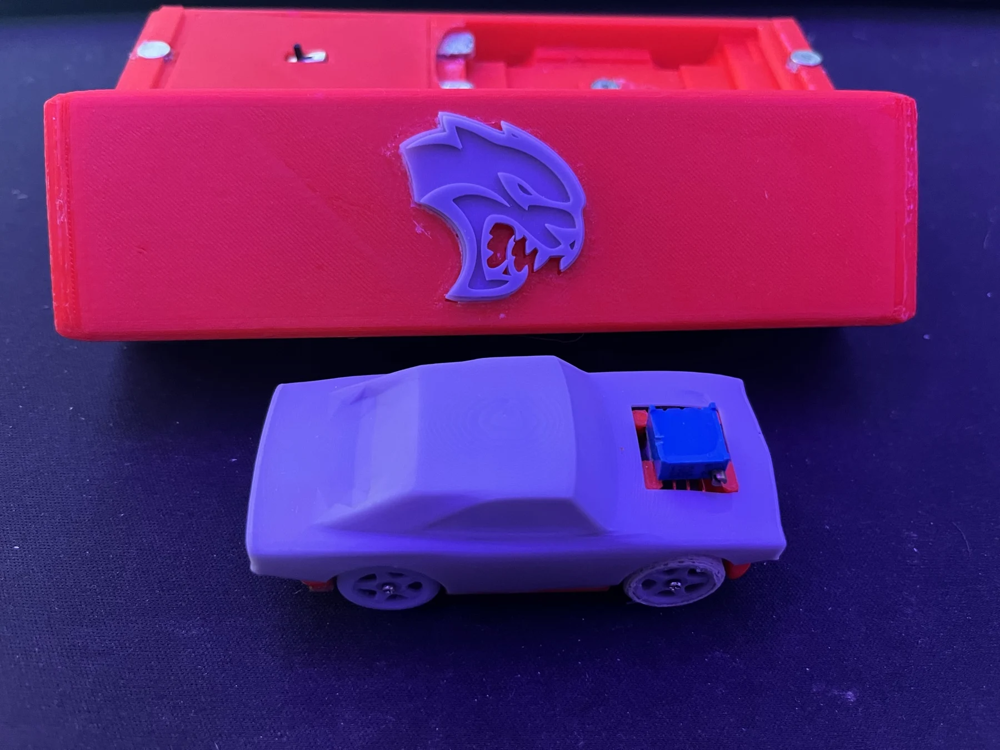
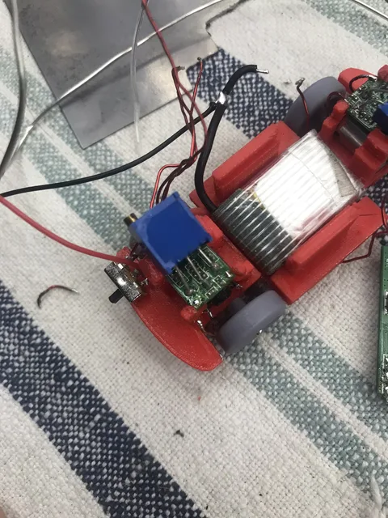
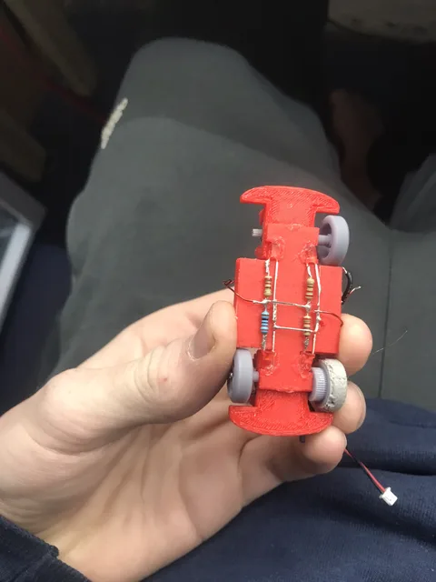

Hybrid RC car
A conversion project combining electric and nitro power, with an automatic starter.
A miniature RC car designed from scratch, complete with tank steering and its own charging case.

My teacher proposed making a Hot Wheels-sized remote-controlled car. We took different approaches to steering: I chose differential drive and designed my own miniature body and chassis.
I combined resin-printed wheels, TPU tires, and small motors and controller boards recovered from servos. Gear meshing and assembly tolerances were particularly challenging at this size.
The final miniature Dodge Hellcat included underbody lighting and a portable AA-powered charging case. This was one of the first complex projects I pushed through to a working result, and its build video became a reminder to keep going on harder projects.
Select any photo to open the full-size gallery.



A conversion project combining electric and nitro power, with an automatic starter.
Building the tool behind the projects: a compact, 3D-printed machine for milling custom circuit boards.

{kind=link}
{kind=link}